AI script — or your own text
Claude, OpenAI or Gemini with your key write the script and storyboard. A long brief is followed, but its instructions are never read out in the video. Without a key, your own text becomes the script.
Type an idea or paste a long brief. KADR Studio writes the script, draws the pictures on your own graphics card, brings scenes to life, adds voice, music and subtitles — and assembles a video from 15 seconds to 30 minutes.
Excerpts from an 18-minute film about dreams: script, pictures, live scenes, voice and subtitles — all from the app.
This is a real prompt (in Russian) and frames from the video the app made from it: story, character, voice-over, music and word-by-word subtitles.
Taxi driver Oleg tells a funny story about a passenger who left a birthday cake in the car
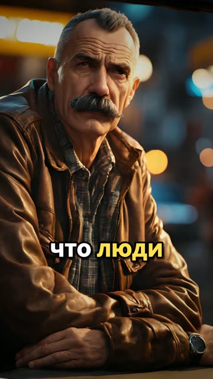
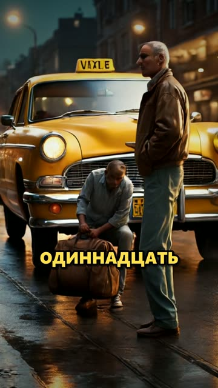
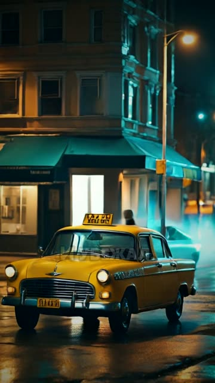
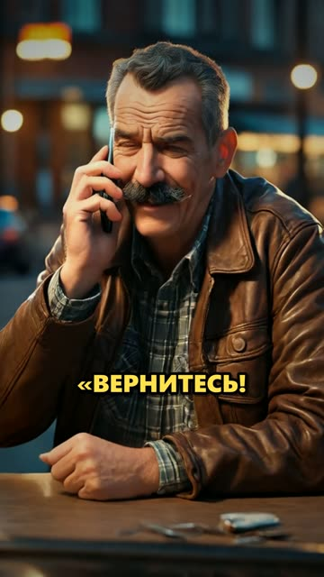
You describe what you need — the app makes the whole video, and you can then adjust a scene, the text or the voice.
One sentence or a detailed brief several pages long — you can drop in a .txt or .docx file. Pick a format — 9:16, 16:9, 1:1 or 4:5 — and a length from 15 seconds to 30 minutes.
The app writes the script and scene plan, draws the pictures, animates the chosen scenes, records the voice, writes music and times subtitles word by word. Time estimates are honest, and after a power cut the work resumes where it stopped.
A finished MP4 with loudness levelled for social networks. Next to it: title, description with chapters and timecodes, hashtags. One click for a 9:16 version, another language, or a set of Shorts.
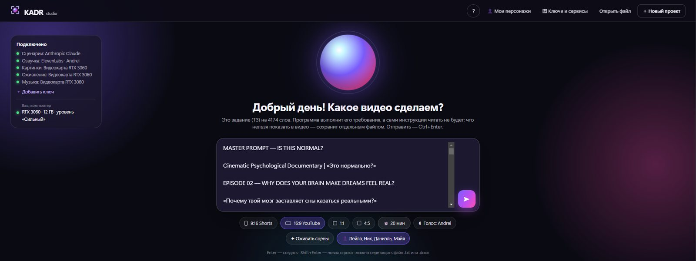
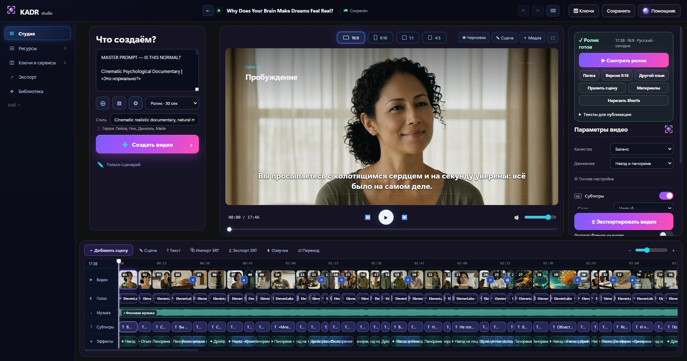
The heavy lifting — pictures, live scenes, music — runs on your graphics card. Outside services connect with your own keys when you need them.
Claude, OpenAI or Gemini with your key write the script and storyboard. A long brief is followed, but its instructions are never read out in the video. Without a key, your own text becomes the script.
Every frame is drawn locally on NVIDIA (SDXL / RealVisXL) — no fee per picture. The generator installs right from the app.
Chosen scenes come alive on the card (Wan 2.2): people move, the camera travels. Other frames get smooth camera motion.
ElevenLabs with your key — including your cloned voices — free neural voices, or Windows voices. Pick by listening.
A background track is composed on the card (ACE-Step) to match the style — no hunting through stock libraries.
Words light up in time with the voice; loudness is levelled for social networks. Subtitles are editable and export to SRT.
A long film becomes a series of vertical clips with 9:16 framing and their own publishing texts.
Title and alternatives, a description with chapters and timecodes, hashtags, a pinned comment, captions for Shorts — each with a Copy button.
Same footage, another language: a new translation, a voice for that language and its own subtitles — without redrawing the pictures.
A hero from a description or from photos: the card learns them and draws them the same way in every video.
Projects and keys stay on your computer, keys encrypted. No account, no telemetry.
Pictures, live scenes and subtitles come straight from finished videos, with no touch-ups in other programs. The clips below are muted.
7 clips from an 18-minute film — in one click
17:46 · 16:9 · 8 chapters · EN and RU versions · plus an ocean video
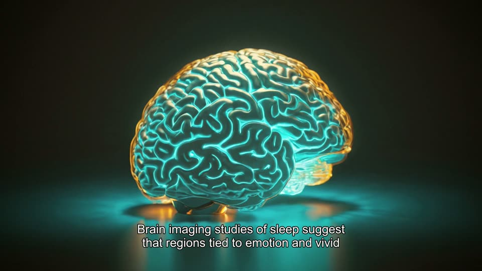
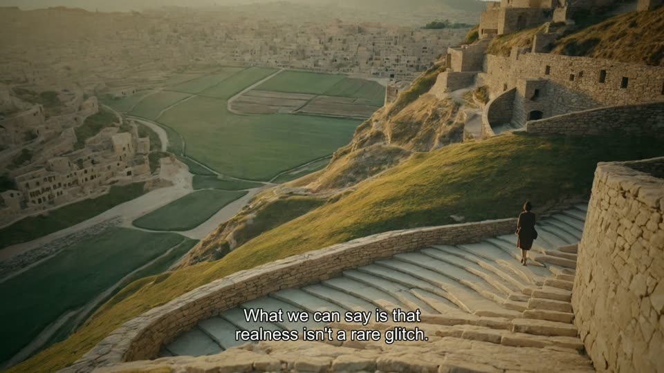
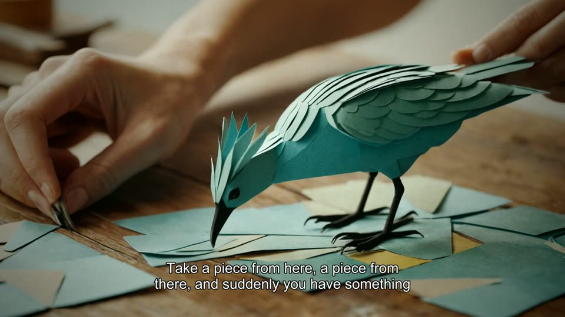
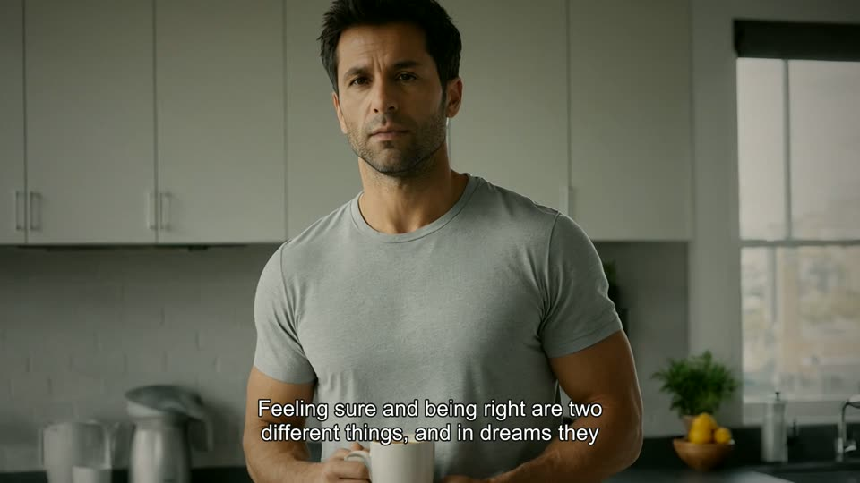
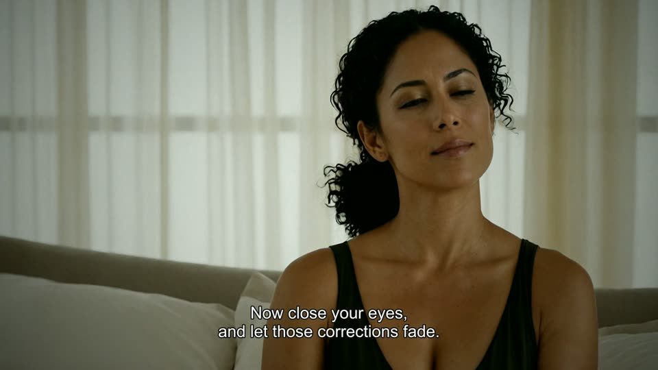
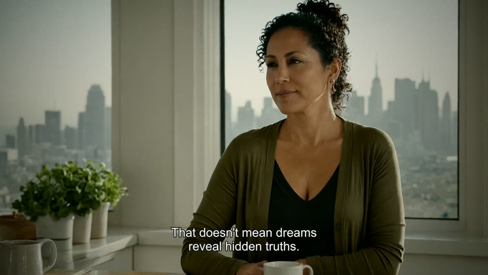
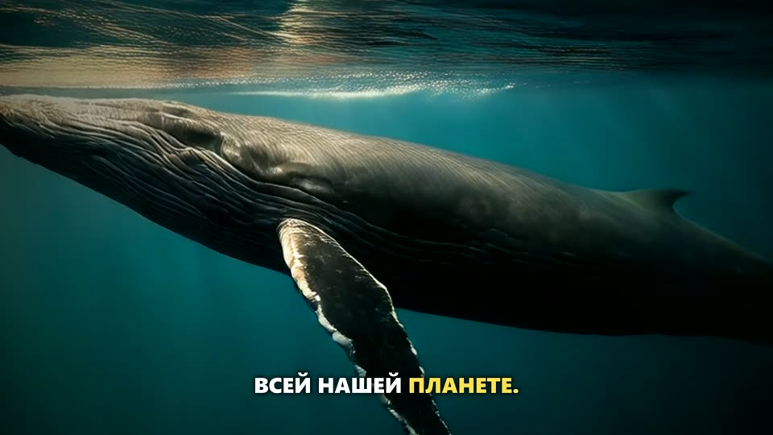
A hero, a picture style or a product. Describe it in words or add photos — the card draws it from different sides, remembers it and keeps drawing it the same way.
Leila · three different scenes of the film
Nick · three different scenes of the film
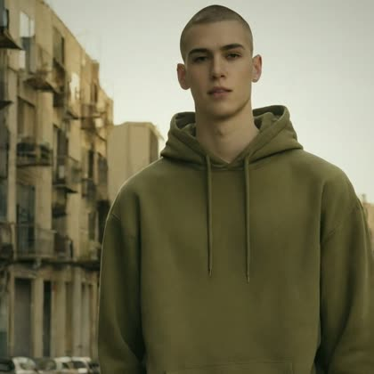
The video's language comes from your brief. A finished film can be released in another language: same footage, a new translation, a voice for that language and its own subtitles.
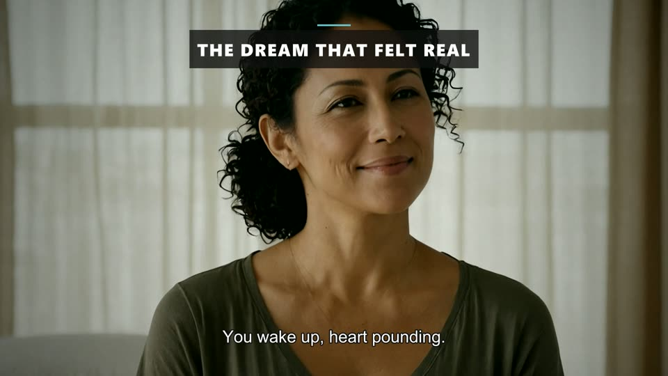
EN · voice Eric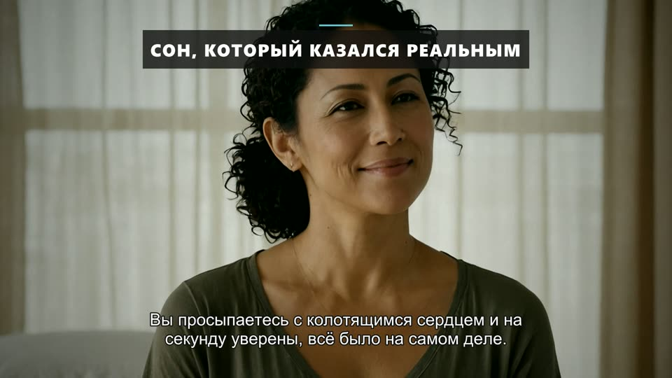
RU · voice AndreiThe same moment of the film in the English and Russian versions. Chapter titles, subtitles and voice-over belong to each language.
Windows 10 or 11 (64-bit). The app checks your graphics card, memory and disk itself and picks a quality level for your PC.
The app makes a video from your own text: a living background, big words in time with the voice, subtitles and a free voice-over. A half-minute vertical video with voice is assembled in about a minute.
For the AI to write the script, you need a Claude, OpenAI or Gemini key. To draw pictures for free, you need an NVIDIA card.
Pictures, live scenes and music are computed on your graphics card and need no internet — only once, to download the generator and models. Windows voices work offline too.
The internet is needed for outside services: scripts from Claude, OpenAI or Gemini, ElevenLabs voices and the free neural voices.
Nowhere. Keys are stored encrypted on your computer and never go into project files. No account, no telemetry.
When you connect an outside service, the request text goes directly to that service with your key — and is billed by that service at its own rates.
From 15 seconds to 30 minutes. Formats: 9:16 for Shorts, TikTok and Reels, 16:9 for YouTube, plus 1:1 and 4:5. From a finished video, one click gives you a vertical version or a set of Shorts.
The language comes from your brief. A finished video can be released in another language on the same footage — with a voice and subtitles in that language.
Prices and payment options have not been decided yet. The app is getting ready for release — follow the news and we will announce when early access opens.
No, Windows 10 and 11 only.
KADR Studio is getting ready for release. Sign up for early access or follow the news — we will tell you when the app can be installed.
Prices and terms will be announced with the release.